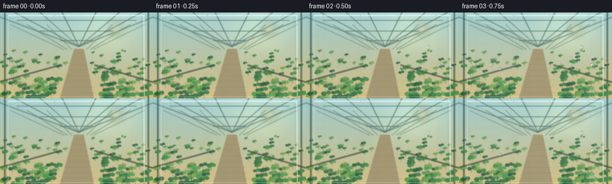
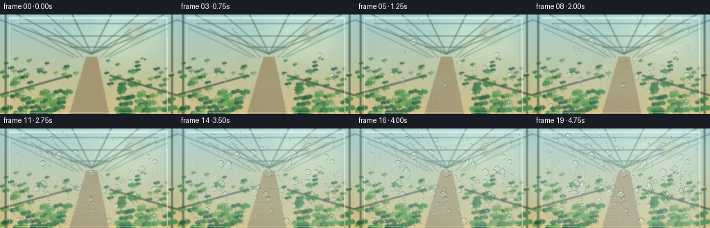
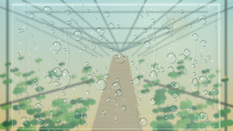

CODING AGENTS AS PIXEL WORLD MODELS
traex/GPT-5.6-Sol · phygen_105
点击播放 · 原生 RGB 像素
逐轮保存的候选
回放视频、检查图与代码变化。
每份候选均可单独播放。实际图片检查记录在下方工具轨迹中。
候选 01播放与检查图
点击播放 · 原生 RGB 像素


展开代码变化
--- 上一保存版本
+++ 本次保存版本
@@ -0,0 +1,250 @@
+from pathlib import Path
+import json, math, random
+import numpy as np
+from PIL import Image, ImageDraw, ImageFilter
+import artifact_io
+
+CASE_DIR = Path(__file__).resolve().parent
+SPEC = json.loads((CASE_DIR / 'task_spec.json').read_text())
+W, H, N = SPEC['width'], SPEC['height'], SPEC['frames']
+S = 3
+w, h = W*S, H*S
+rng = random.Random(105)
+
+
+def sc(v): return int(round(v*S))
+def pts(seq): return [(sc(x), sc(y)) for x, y in seq]
+
+def greenhouse_background():
+ # Warm humid greenhouse, deliberately detailed but softly focused behind plastic.
+ yy = np.linspace(0, 1, h)[:, None]
+ xx = np.linspace(0, 1, w)[None, :]
+ top = np.array([154, 200, 203.], float)
+ bottom = np.array([213, 188, 123.], float)
+ arr = top[None,None,:]*(1-yy[:,:,None]) + bottom[None,None,:]*yy[:,:,None]
+ sun_glow = np.exp(-(((xx-.71)/.20)**2 + ((yy-.20)/.28)**2))*34
+ arr = arr + np.zeros((h,w,1)) + sun_glow[:,:,None]*np.array([1.0,.78,.30])[None,None,:]
+ im = Image.fromarray(np.uint8(np.clip(arr,0,255)), 'RGB')
+ d = ImageDraw.Draw(im, 'RGBA')
+ van = (sc(132), sc(57))
+ # Roof panes and frame converge toward the central aisle.
+ d.polygon(pts([(0,0),(256,0),(132,57)]), fill=(195,231,222,55))
+ for x in [-30, 18, 63, 102, 162, 204, 244, 286]:
+ d.line([(sc(x),sc(-4)),van], fill=(55,91,83,150), width=sc(2))
+ d.line([(sc(x+2),sc(-4)),van], fill=(232,246,228,80), width=sc(.7))
+ for y0 in [13,31,47]:
+ # crossbars slightly bowed by perspective
+ inset = (y0/57)*122
+ d.line(pts([(inset,y0),(256-inset,y0)]), fill=(62,100,88,150), width=sc(1.6))
+ # Vertical greenhouse posts and side glass panels.
+ for x0 in [17,45,78,188,218,242]:
+ xe = 132 + (x0-132)*.22
+ d.line(pts([(x0,20),(xe,62)]), fill=(68,104,88,130), width=sc(1.4))
+ d.line(pts([(8,0),(8,144)]), fill=(53,83,75,180), width=sc(3))
+ d.line(pts([(248,0),(248,144)]), fill=(53,83,75,175), width=sc(3))
+ # Aisle perspective floor.
+ d.polygon(pts([(100,144),(157,144),(140,61),(124,61)]), fill=(162,145,105,255))
+ for i in range(9):
+ y = 68 + i*9.5
+ span = 7 + i*3.1
+ d.line(pts([(132-span,y),(132+span,y)]), fill=(118,110,84,75), width=sc(.8))
+ # Dense rows of foliage; leaves increase in scale toward camera.
+ def plant_row(side):
+ for j in range(62):
+ frac = rng.random()**.75
+ y = 62 + frac*83
+ if side < 0:
+ inner = 120 - frac*35
+ x = rng.uniform(4, inner)
+ else:
+ inner = 144 + frac*30
+ x = rng.uniform(inner,252)
+ sz = 1.8 + frac*5.7 + rng.random()*2
+ green = rng.choice([(44,105,53,235),(57,126,59,240),(70,143,66,230),(31,86,49,235),(98,151,66,220)])
+ # stem and 2 overlapping leaves
+ d.line(pts([(x,y+sz*.8),(x+rng.uniform(-1,1),y-sz)]), fill=(43,91,48,190), width=max(1,sc(.6)))
+ d.ellipse((sc(x-sz),sc(y-sz*.55),sc(x+.4),sc(y+sz*.25)), fill=green)
+ g2 = tuple(min(255,c+12) for c in green[:3])+(green[3],)
+ d.ellipse((sc(x-.2),sc(y-sz*.75),sc(x+sz),sc(y+sz*.05)), fill=g2)
+ if rng.random()<.16:
+ d.ellipse((sc(x-1.2),sc(y-sz-1.2),sc(x+1.2),sc(y-sz+1.2)), fill=(238,190,65,210))
+ plant_row(-1); plant_row(1)
+ # Benches/pots near sides.
+ d.line(pts([(0,116),(101,88)]), fill=(62,72,58,190), width=sc(3))
+ d.line(pts([(256,117),(158,88)]), fill=(62,72,58,190), width=sc(3))
+ # warm sun disk through roof
+ glow = Image.new('RGBA',(w,h),(0,0,0,0)); gd=ImageDraw.Draw(glow,'RGBA')
+ gd.ellipse((sc(184),sc(17),sc(205),sc(38)), fill=(255,236,154,100))
+ glow=glow.filter(ImageFilter.GaussianBlur(sc(6)))
+ im=Image.alpha_composite(im.convert('RGBA'),glow).convert('RGB')
+ return im.filter(ImageFilter.GaussianBlur(sc(.7)))
+
+BASE = greenhouse_background()
+
+# Stable droplet nuclei. Distribution spans the suspended sheet, with many late microbeads.
+drops=[]
+for i in range(168):
+ x=rng.uniform(18,238); y=rng.uniform(9,137)
+ # mixture: plentiful pin beads plus several memorable drops
+ u=rng.random()
+ if u<.68: r=rng.uniform(.55,1.65)
+ elif u<.94: r=rng.uniform(1.7,3.2)
+ else: r=rng.uniform(3.4,5.2)
+ activation=rng.uniform(.10,.88) - (r/5.2)*.15
+ drops.append((x,y,r,max(.04,activation),rng.uniform(.78,1.24),rng.uniform(-.28,.28)))
+
+# Additional early drops arranged around places that visibly merge later.
+merge_groups = [
+ (62,49,.51,5.0,(-3.0,-1.0),(3.1,1.0)),
+ (111,91,.61,5.8,(-3.4,-.8),(3.0,.8)),
+ (188,62,.69,5.4,(-3.0,-1.2),(3.0,1.1)),
+]
+
+
+def vapor_layer(frame):
+ t=frame/(N-1)
+ layer=Image.new('RGBA',(w,h),(0,0,0,0)); d=ImageDraw.Draw(layer,'RGBA')
+ # Warm vapor curls rise and contact the cool sheet, then fade as condensation forms.
+ strength=max(0,1-abs(t-.25)/.42)
+ for k in range(8):
+ phase=k*.73
+ x0=22+k*30 + 5*math.sin(frame*.18+phase)
+ y0=135-k%3*7
+ curve=[]
+ for j in range(19):
+ q=j/18
+ x=x0+9*math.sin(q*5.0+phase+frame*.08)+q*10
+ y=y0-q*(54+8*math.sin(phase))
+ curve.append((sc(x),sc(y)))
+ d.line(curve, fill=(240,243,220,int(32*strength)), width=sc(4.5))
+ return layer.filter(ImageFilter.GaussianBlur(sc(5.5)))
+
+
+def droplet(draw, x, y, rx, ry, alpha=1.0, seedphase=0.0):
+ # Layered rim, refracted core and specular highlights suggest a convex water lens.
+ X,Y,RX,RY=map(sc,(x,y,rx,ry))
+ if RX<1 or RY<1:return
+ a=int(max(0,min(255,alpha*255)))
+ box=(X-RX,Y-RY,X+RX,Y+RY)
+ # soft lower-right contact shadow
+ draw.ellipse((X-RX+sc(.65),Y-RY+sc(.85),X+RX+sc(.7),Y+RY+sc(.9)), fill=(25,60,58,int(a*.24)))
+ draw.ellipse(box, fill=(196,226,222,int(a*.16)), outline=(226,246,242,int(a*.54)), width=max(1,sc(.35)))
+ # lower rim and upper crescent
+ draw.arc(box, 18, 168, fill=(248,255,250,int(a*.78)), width=max(1,sc(.45)))
+ draw.arc(box, 190, 352, fill=(37,78,74,int(a*.52)), width=max(1,sc(.5)))
+ # focal highlight and dim internal caustic
+ hx=X-int(RX*.34); hy=Y-int(RY*.38)
+ rr=max(1,int(min(RX,RY)*.17))
+ draw.ellipse((hx-rr,hy-rr,hx+rr,hy+rr), fill=(255,255,252,int(a*.92)))
+ if RX>sc(2.2):
+ rr2=max(1,int(min(RX,RY)*.12)); cx=X+int(RX*.25); cy=Y+int(RY*.32)
+ draw.ellipse((cx-rr2,cy-rr2,cx+rr2,cy+rr2), fill=(230,249,225,int(a*.40)))
+
+
+def make_frame(fi):
+ t=fi/(N-1)
+ frame=BASE.convert('RGBA')
+ frame=Image.alpha_composite(frame,vapor_layer(fi))
+ # The cool plastic sheet: clear initially, then milkier as microscopic condensation forms.
+ sheet=Image.new('RGBA',(w,h),(0,0,0,0)); sd=ImageDraw.Draw(sheet,'RGBA')
+ # Sheet boundary makes the substrate explicit.
+ sd.rounded_rectangle((sc(13),sc(3),sc(242),sc(142)), radius=sc(2.5),
+ fill=(201,229,229,20+int(25*t)), outline=(235,249,245,105), width=sc(1))
+ # top clamped fold and right hanging edge
+ sd.line(pts([(13,5),(242,5)]),fill=(245,255,250,155),width=sc(2.1))
+ sd.line(pts([(240,5),(241,142)]),fill=(240,255,251,135),width=sc(1.4))
+ sd.line(pts([(237,6),(238,141)]),fill=(89,129,124,45),width=sc(.7))
+ # Long subtle plastic wrinkles shimmer without moving camera.
+ for k,x in enumerate([28,89,151,218]):
+ path=[]
+ for j in range(15):
+ y=4+j*9.8
+ xx=x+1.4*math.sin(j*.72+k*1.4)+.15*math.sin(fi*.2+k)
+ path.append((sc(xx),sc(y)))
+ sd.line(path,fill=(246,255,252,27),width=sc(.65))
+ sd.line([(p[0]+sc(.8),p[1]) for p in path],fill=(52,98,96,13),width=sc(.55))
+ frame=Image.alpha_composite(frame,sheet)
+
+ # Condensation film: uneven cloudy islands that spread over time rather than a uniform fade.
+ fogmask=Image.new('L',(w,h),0); fd=ImageDraw.Draw(fogmask)
+ if t>.12:
+ q=(t-.12)/.88
+ for k in range(24):
+ cx=sc(18+(k*47)%220 + 7*math.sin(k*2.1))
+ cy=sc(8+(k*31)%129)
+ rr=sc(8+q*30+(k%4)*4)
+ val=int(10+42*q)
+ fd.ellipse((cx-rr,cy-rr*.65,cx+rr,cy+rr*.65),fill=val)
+ fogmask=fogmask.filter(ImageFilter.GaussianBlur(sc(13)))
+ fog_rgba=Image.new('RGBA',(w,h),(220,239,236,0)); fog_rgba.putalpha(fogmask)
+ frame=Image.alpha_composite(frame,fog_rgba)
+
+ # Wet rivulet tracks become visible only late in the timelapse.
+ wet=Image.new('RGBA',(w,h),(0,0,0,0)); wd=ImageDraw.Draw(wet,'RGBA')
+ runners=[(73,31,.45,54,4.8),(169,24,.61,61,4.1),(213,48,.72,45,3.8)]
+ for ri,(x,y0,start,dist,rad) in enumerate(runners):
+ if t>start:
+ q=(t-start)/(1-start)
+ yy=y0+dist*(q**1.45)
+ trail=[]
+ for j in range(18):
+ py=y0+(yy-y0)*j/17
+ px=x+1.4*math.sin(py*.13+ri)
+ trail.append((sc(px),sc(py)))
+ wd.line(trail,fill=(224,245,240,int(85*q)),width=sc(1.15))
+ wd.line([(a+sc(1.0),b) for a,b in trail],fill=(37,86,80,int(35*q)),width=sc(.55))
+ frame=Image.alpha_composite(frame,wet)
+
+ dl=Image.new('RGBA',(w,h),(0,0,0,0)); dd=ImageDraw.Draw(dl,'RGBA')
+ # Regular droplets grow smoothly after their individual nucleation time.
+ for x,y,r,act,squash,jit in drops:
+ if t<=act: continue
+ p=min(1,(t-act)/(.36+act*.10))
+ ease=1-(1-p)**2
+ # late coalescence removes droplets near the explicit merge centers
+ swallowed=False
+ for mx,my,mt,mr,_,_ in merge_groups:
+ if t>mt and (x-mx)**2+(y-my)**2 < (mr*1.25)**2: swallowed=True
+ if swallowed: continue
+ rr=r*(.24+.76*math.sqrt(max(0,ease)))
+ droplet(dd,x+jit*ease,y,rr,rr*squash,alpha=min(1,p*2.8),seedphase=jit)
+ # Explicit pair-to-single coalescence events.
+ for mx,my,mt,mr,off1,off2 in merge_groups:
+ if t<mt:
+ p=max(0,min(1,(t-(mt-.32))/.32))
+ if p>0:
+ droplet(dd,mx+off1[0]*(1-.20*p),my+off1[1],mr*.48*(.45+.55*p),mr*.43*(.45+.55*p),p)
+ droplet(dd,mx+off2[0]*(1-.20*p),my+off2[1],mr*.52*(.45+.55*p),mr*.45*(.45+.55*p),p)
+ else:
+ p=min(1,(t-mt)/.22)
+ droplet(dd,mx,my+1.2*p,mr*(.67+.20*p),mr*(.58+.38*p),1)
+ # Moving large beads cap their trails.
+ for ri,(x,y0,start,dist,rad) in enumerate(runners):
+ if t>start:
+ q=(t-start)/(1-start); yy=y0+dist*(q**1.45)
+ xx=x+1.4*math.sin(yy*.13+ri)
+ droplet(dd,xx,yy,rad*(.62+.38*q),rad*(.85+1.05*q),min(1,q*4))
+ frame=Image.alpha_composite(frame,dl)
+
+ # Fine bead field blooms late, emphasizing the macroscopic phase change.
+ micro=Image.new('RGBA',(w,h),(0,0,0,0)); md=ImageDraw.Draw(micro,'RGBA')
+ if t>.32:
+ q=(t-.32)/.68
+ local=random.Random(800)
+ total=int(210*q)
+ for i in range(total):
+ x=local.uniform(16,240); y=local.uniform(7,140); r=local.choice([.25,.3,.4,.5,.65])
+ a=int(50+90*q)
+ md.ellipse((sc(x-r),sc(y-r),sc(x+r),sc(y+r)),fill=(245,255,251,a))
+ if r>.4: md.point((sc(x-r*.3),sc(y-r*.3)),fill=(255,255,255,210))
+ frame=Image.alpha_composite(frame,micro)
+
+ # Very mild cool vignette at sheet edges.
+ a=np.asarray(frame.convert('RGB').resize((W,H),Image.Resampling.LANCZOS),dtype=np.float32)
+ Y,X=np.mgrid[0:H,0:W]; edge=np.clip(((X-128)/150)**2+((Y-72)/105)**2,0,1)[...,None]
+ a=a*(1-.045*edge)+np.array([193,217,216])[None,None,:]*(.045*edge)
+ return np.uint8(np.clip(a,0,255))
+
+frames=np.stack([make_frame(i) for i in range(N)],axis=0)
+artifact_io.save(frames, CASE_DIR)
+print('saved',frames.shape,frames.dtype)
候选 02播放与检查图
点击播放 · 原生 RGB 像素

展开代码变化
--- 上一保存版本
+++ 本次保存版本
@@ -116,7 +116,7 @@
x=x0+9*math.sin(q*5.0+phase+frame*.08)+q*10
y=y0-q*(54+8*math.sin(phase))
curve.append((sc(x),sc(y)))
- d.line(curve, fill=(240,243,220,int(32*strength)), width=sc(4.5))
+ d.line(curve, fill=(240,243,220,int(52*strength)), width=sc(5.0))
return layer.filter(ImageFilter.GaussianBlur(sc(5.5)))
候选 03播放与检查图
可观测工具轨迹
实际执行的命令与返回图片。
命令 1exit 0
/bin/bash -lc "ls -la && printf '\\n--- prompt.txt ---\\n' && cat prompt.txt && printf '\\n--- GENERATION_RULES.md ---\\n' && cat GENERATION_RULES.md && printf '\\n--- task_spec.json ---\\n' && cat task_spec.json"
命令 2exit 0
/bin/bash -lc "sed -n '1,240p' artifact_io.py"
命令 3exit 2
/bin/bash -lc "cat > generate.py <<'PY'
from pathlib import Path
import json, math, random
import numpy as np
from PIL import Image, ImageDraw, ImageFilter
import artifact_io
CASE_DIR = Path(__file__).resolve().parent
SPEC = json.loads((CASE_DIR / 'task_spec.json').read_text())
W, H, N = SPEC['width'], SPEC['height'], SPEC['frames']
S = 3
w, h = W*S, H*S
rng = random.Random(105)
def sc(v): return int(round(v*S))
def pts(seq): return [(sc(x), sc(y)) for x, y in seq]
def greenhouse_background():
# Warm humid greenhouse, deliberately detailed but softly focused behind plastic.
yy = np.linspace(0, 1, h)[:, None]
xx = np.linspace(0, 1, w)[None, :]
top = np.array([154, 200, 203.], float)
bottom = np.array([213, 188, 123.], float)
arr = top[None,None,:]*(1-yy[:,:,None]) + bottom[None,None,:]*yy[:,:,None]
sun_glow = np.exp(-(((xx-.71)/.20)**2 + ((yy-.20)/.28)**2))*34
arr += sun_glow[:,:,None]*np.array([1.0,.78,.30])[None,None,:]
im = Image.fromarray(np.uint8(np.clip(arr,0,255)), 'RGB')
d = ImageDraw.Draw(im, 'RGBA')
van = (sc(132), sc(57))
# Roof panes and frame converge toward the central aisle.
d.polygon(pts([(0,0),(256,0),(132,57)]), fill=(195,231,222,55))
for x in [-30, 18, 63, 102, 162, 204, 244, 286]:
d.line([(sc(x),sc(-4)),van], fill=(55,91,83,150), width=sc(2))
d.line([(sc(x+2),sc(-4)),van], fill=(232,246,228,80), width=sc(.7))
for y0 in [13,31,47]:
# crossbars slightly bowed by perspective
inset = (y0/57)*122
d.line(pts([(inset,y0),(256-inset,y0)]), fill=(62,100,88,150), width=sc(1.6))
# Vertical greenhouse posts and side glass panels.
for x0 in [17,45,78,188,218,242]:
xe = 132 + (x0-132)*.22
d.line(pts([(x0,20),(xe,62)]), fill=(68,104,88,130), width=sc(1.4))
d.line(pts([(8,0),(8,144)]), fill=(53,83,75,180), width=sc(3))
d.line(pts([(248,0),(248,144)]), fill=(53,83,75,175), width=sc(3))
# Aisle perspective floor.
d.polygon(pts([(100,144),(157,144),(140,61),(124,61)]), fill=(162,145,105,255))
for i in range(9):
y = 68 + i*9.5
span = 7 + i*3.1
d.line(pts([(132-span,y),(132+span,y)]), fill=(118,110,84,75), width=sc(.8))
# Dense rows of foliage; leaves increase in scale toward camera.
def plant_row(side):
for j in range(62):
frac = rng.random()**.75
y = 62 + frac*83
if side < 0:
inner = 120 - frac*35
x = rng.uniform(4, inner)
else:
inner = 144 + frac*30
x = rng.uniform(inner,252)
sz = 1.8 + frac*5.7 + rng.random()*2
green = rng.choice([(44,105,53,235),(57,126,59,240),(70,143,66,230),(31,86,49,235),(98,151,66,220)])
# stem and 2 overlapping leaves
d.line(pts([(x,y+sz*.8),(x+rng.uniform(-1,1),y-sz)]), fill=(43,91,48,190), width=max(1,sc(.6)))
d.ellipse((sc(x-sz),sc(y-sz*.55),sc(x+.4),sc(y+sz*.25)), fill=green)
g2 = tuple(min(255,c+12) for c in green[:3])+(green[3],)
d.ellipse((sc(x-.2),sc(y-sz*.75),sc(x+sz),sc(y+sz*.05)), fill=g2)
if rng.random()<.16:
d.ellipse((sc(x-1.2),sc(y-sz-1.2),sc(x+1.2),sc(y-sz+1.2)), fill=(238,190,65,210))
plant_row(-1); plant_row(1)
# Benches/pots near sides.
d.line(pts([(0,116),(101,88)]), fill=(62,72,58,190), width=sc(3))
d.line(pts([(256,117),(158,88)]), fill=(62,72,58,190), width=sc(3))
# warm sun disk through roof
glow = Image.new('RGBA',(w,h),(0,0,0,0)); gd=ImageDraw.Draw(glow,'RGBA')
gd.ellipse((sc(184),sc(17),sc(205),sc(38)), fill=(255,236,154,100))
glow=glow.filter(ImageFilter.GaussianBlur(sc(6)))
im=Image.alpha_composite(im.convert('RGBA'),glow).convert('RGB')
return im.filter(ImageFilter.GaussianBlur(sc(.7)))
BASE = greenhouse_background()
# Stable droplet nuclei. Distribution spans the suspended sheet, with many late microbeads.
drops=[]
for i in range(168):
x=rng.uniform(18,238); y=rng.uniform(9,137)
# mixture: plentiful pin beads plus several memorable drops
u=rng.random()
if u<.68: r=rng.uniform(.55,1.65)
elif u<.94: r=rng.uniform(1.7,3.2)
else: r=rng.uniform(3.4,5.2)
activation=rng.uniform(.10,.88) - (r/5.2)*.15
drops.append((x,y,r,max(.04,activation),rng.uniform(.78,1.24),rng.uniform(-.28,.28)))
# Additional early drops arranged around places that visibly merge later.
merge_groups = [
(62,49,.51,5.0,(-3.0,-1.0),(3.1,1.0)),
(111,91,.61,5.8,(-3.4,-.8),(3.0,.8)),
(188,62,.69,5.4,(-3.0,-1.2),(3.0,1.1)),
]
def vapor_layer(frame):
t=frame/(N-1)
layer=Image.new('RGBA',(w,h),(0,0,0,0)); d=ImageDraw.Draw(layer,'RGBA')
# Warm vapor curls rise and contact the cool sheet, then fade as condensation forms.
strength=max(0,1-abs(t-.25)/.42)
for k in range(8):
phase=k*.73
x0=22+k*30 + 5*math.sin(frame*.18+phase)
y0=135-k%3*7
curve=[]
for j in range(19):
q=j/18
x=x0+9*math.sin(q*5.0+phase+frame*.08)+q*10
y=y0-q*(54+8*math.sin(phase))
curve.append((sc(x),sc(y)))
d.line(curve, fill=(240,243,220,int(32*strength)), width=sc(4.5))
return layer.filter(ImageFilter.GaussianBlur(sc(5.5)))
def droplet(draw, x, y, rx, ry, alpha=1.0, seedphase=0.0):
# Layered rim, refracted core and specular highlights suggest a convex water lens.
X,Y,RX,RY=map(sc,(x,y,rx,ry))
if RX<1 or RY<1:return
a=int(max(0,min(255,alpha*255)))
box=(X-RX,Y-RY,X+RX,Y+RY)
# soft lower-right contact shadow
draw.ellipse((X-RX+sc(.65),Y-RY+sc(.85),X+RX+sc(.7),Y+RY+sc(.9)), fill=(25,60,58,int(a*.24)))
draw.ellipse(box, fill=(196,226,222,int(a*.16)), outline=(226,246,242,int(a*.54)), width=max(1,sc(.35)))
# lower rim and upper crescent
draw.arc(box, 18, 168, fill=(248,255,250,int(a*.78)), width=max(1,sc(.45)))
draw.arc(box, 190, 352, fill=(37,78,74,int(a*.52)), width=max(1,sc(.5)))
# focal highlight and dim internal caustic
hx=X-int(RX*.34); hy=Y-int(RY*.38)
rr=max(1,int(min(RX,RY)*.17))
draw.ellipse((hx-rr,hy-rr,hx+rr,hy+rr), fill=(255,255,252,int(a*.92)))
if RX>sc(2.2):
rr2=max(1,int(min(RX,RY)*.12)); cx=X+int(RX*.25); cy=Y+int(RY*.32)
draw.ellipse((cx-rr2,cy-rr2,cx+rr2,cy+rr2), fill=(230,249,225,int(a*.40)))
def make_frame(fi):
t=fi/(N-1)
frame=BASE.convert('RGBA')
frame=Image.alpha_composite(frame,vapor_layer(fi))
# The cool plastic sheet: clear initially, then milkier as microscopic condensation forms.
sheet=Image.new('RGBA',(w,h),(0,0,0,0)); sd=ImageDraw.Draw(sheet,'RGBA')
# Sheet boundary makes the substrate explicit.
sd.rounded_rectangle((sc(13),sc(3),sc(242),sc(142)), radius=sc(2.5),
fill=(201,229,229,20+int(25*t)), outline=(235,249,245,105), width=sc(1))
# top clamped fold and right hanging edge
sd.line(pts([(13,5),(242,5)]),fill=(245,255,250,155),width=sc(2.1))
sd.line(pts([(240,5),(241,142)]),fill=(240,255,251,135),width=sc(1.4))
sd.line(pts([(237,6),(238,141)]),fill=(89,129,124,45),width=sc(.7))
# Long subtle plastic wrinkles shimmer without moving camera.
for k,x in enumerate([28,89,151,218]):
path=[]
for j in range(15):
y=4+j*9.8
xx=x+1.4*math.sin(j*.72+k*1.4)+.15*math.sin(fi*.2+k)
path.append((sc(xx),sc(y)))
sd.line(path,fill=(246,255,252,27),width=sc(.65))
sd.line([(p[0]+sc(.8),p[1]) for p in path],fill=(52,98,96,13),width=sc(.55))
frame=Image.alpha_composite(frame,sheet)
# Condensation film: uneven cloudy islands that spread over time rather than a uniform fade.
fogmask=Image.new('L',(w,h),0); fd=ImageDraw.Draw(fogmask)
if t>.12:
q=(t-.12)/.88
for k in range(24):
cx=sc(18+(k*47)%220 + 7*math.sin(k*2.1))
cy=sc(8+(k*31)%129)
rr=sc(8+q*30+(k%4)*4)
val=int(10+42*q)
fd.ellipse((cx-rr,cy-rr*.65,cx+rr,cy+rr*.65),fill=val)
fogmask=fogmask.filter(ImageFilter.GaussianBlur(sc(13)))
fog_rgba=Image.new('RGBA',(w,h),(220,239,236,0)); fog_rgba.putalpha(fogmask)
frame=Image.alpha_composite(frame,fog_rgba)
# Wet rivulet tracks become visible only late in the timelapse.
wet=Image.new('RGBA',(w,h),(0,0,0,0)); wd=ImageDraw.Draw(wet,'RGBA')
runners=[(73,31,.45,54,4.8),(169,24,.61,61,4.1),(213,48,.72,45,3.8)]
for ri,(x,y0,start,dist,rad) in enumerate(runners):
if t>start:
q=(t-start)/(1-start)
yy=y0+dist*(q**1.45)
trail=[]
for j in range(18):
py=y0+(yy-y0)*j/17
px=x+1.4*math.sin(py*.13+ri)
trail.append((sc(px),sc(py)))
wd.line(trail,fill=(224,245,240,int(85*q)),width=sc(1.15))
wd.line([(a+sc(1.0),b) for a,b in trail],fill=(37,86,80,int(35*q)),width=sc(.55))
frame=Image.alpha_composite(frame,wet)
dl=Image.new('RGBA',(w,h),(0,0,0,0)); dd=ImageDraw.Draw(dl,'RGBA')
# Regular droplets grow smoothly after their individual nucleation time.
for x,y,r,act,squash,jit in drops:
if t<=act: continue
p=min(1,(t-act)/(.36+act*.10))
ease=1-(1-p)**2
# late coalescence removes droplets near the explicit merge centers
swallowed=False
for mx,my,mt,mr,_,_ in merge_groups:
if t>mt and (x-mx)**2+(y-my)**2 < (mr*1.25)**2: swallowed=True
if swallowed: continue
rr=r*(.24+.76*math.sqrt(max(0,ease)))
droplet(dd,x+jit*ease,y,rr,rr*squash,alpha=min(1,p*2.8),seedphase=jit)
# Explicit pair-to-single coalescence events.
for mx,my,mt,mr,off1,off2 in merge_groups:
if t<mt:
p=max(0,min(1,(t-(mt-.32))/.32))
if p>0:
droplet(dd,mx+off1[0]*(1-.20*p),my+off1[1],mr*.48*(.45+.55*p),mr*.43*(.45+.55*p),p)
droplet(dd,mx+off2[0]*(1-.20*p),my+off2[1],mr*.52*(.45+.55*p),mr*.45*(.45+.55*p),p)
else:
p=min(1,(t-mt)/.22)
droplet(dd,mx,my+1.2*p,mr*(.67+.20*p),mr*(.58+.38*p),1)
# Moving large beads cap their trails.
for ri,(x,y0,start,dist,rad) in enumerate(runners):
if t>start:
q=(t-start)/(1-start); yy=y0+dist*(q**1.45)
xx=x+1.4*math.sin(yy*.13+ri)
droplet(dd,xx,yy,rad*(.62+.38*q),rad*(.85+1.05*q),min(1,q*4))
frame=Image.alpha_composite(frame,dl)
# Fine bead field blooms late, emphasizing the macroscopic phase change.
micro=Image.new('RGBA',(w,h),(0,0,0,0)); md=ImageDraw.Draw(micro,'RGBA')
if t>.32:
q=(t-.32)/.68
local=random.Random(800)
total=int(210*q)
for i in range(total):
x=local.uniform(16,240); y=local.uniform(7,140); r=local.choice([.25,.3,.4,.5,.65])
a=int(50+90*q)
md.ellipse((sc(x-r),sc(y-r),sc(x+r),sc(y+r)),fill=(245,255,251,a))
if r>.4: md.point((sc(x-r*.3),sc(y-r*.3)),fill=(255,255,255,210))
frame=Image.alpha_composite(frame,micro)
# Very mild cool vignette at sheet edges.
a=np.asarray(frame.convert('RGB').resize((W,H),Image.Resampling.LANCZOS),dtype=np.float32)
Y,X=np.mgrid[0:H,0:W]; edge=np.clip(((X-128)/150)**2+((Y-72)/105)**2,0,1)[...,None]
a=a*(1-.045*edge)+np.array([193,217,216])[None,None,:]*(.045*edge)
return np.uint8(np.clip(a,0,255))
frames=np.stack([make_frame(i) for i in range(N)],axis=0)
artifact_io.save(frames, CASE_DIR)
print('saved',frames.shape,frames.dtype)
PY
python generate.py
ls -lh pixels.npz inspection.png index.html frames/00.png frames/19.png"命令 4exit 0
/bin/bash -lc "python - <<'PY' p='generate.py' s=open(p).read() s=s.replace(\" arr += sun_glow[:,:,None]*np.array([1.0,.78,.30])[None,None,:]\", \" arr = arr + np.zeros((h,w,1)) + sun_glow[:,:,None]*np.array([1.0,.78,.30])[None,None,:]\") open(p,'w').write(s) PY python generate.py ls -lh pixels.npz inspection.png transition_check.png index.html frames/00.png frames/19.png"
命令 5exit 0
/bin/bash -lc "python - <<'PY'
p='generate.py'
s=open(p).read().replace(\"int(32*strength)\", \"int(52*strength)\").replace(\"width=sc(4.5)\", \"width=sc(5.0)\")
open(p,'w').write(s)
PY
python generate.py
python - <<'PY'
import json, numpy as np
from PIL import Image
from pathlib import Path
p=Path('.')
s=json.loads((p/'task_spec.json').read_text())
z=np.load(p/'pixels.npz')['pixels']
assert z.shape==(s['height'],s['width'],s['frames'])
assert all(Image.open(p/'frames'/f'{i:02d}.png').size==(s['width'],s['height']) for i in range(s['frames']))
assert len(list((p/'frames').glob('*.png')))==s['frames']
print('validated', z.shape, 'frames=',s['frames'],'fps=',s['fps'])
PY"视觉工具实际返回图片 1

视觉工具实际返回图片 2

保存候选 3 份；完成命令 5 次；可验证图片返回 2 张。原始 API 响应与完整日志保留在本地。